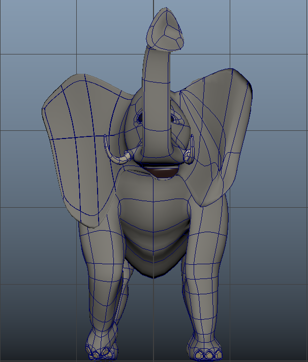
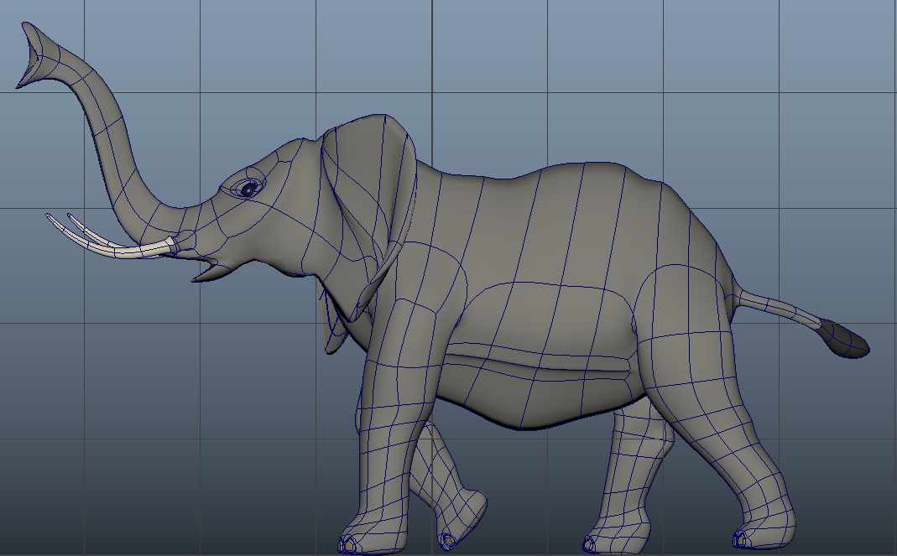

AutoDesk Maya: Project 1

September 25, 2019 -- For this first project, we are creating a model of an object that we picked in class. I first thing I thought was to pick the the "
Preprocessing

To start, I took some pictures of the of the elephant from different angles. I found it hard to take pictures of the front and back. I also thought that an outline might be better, so I took the photos to Photoshop and created an outline (shown below). In retrospect, I probably did not need this, but I think think made the process of modeling easier. I put this images into the the views in Maya
I did not want to see the reference images in the perspective view, so I set the images to be only seen at their respective cameras.
Modeling the Body

Using the side view of the reference image, I created an outline using the CV curve tools to create three curves for the top, midsection, and underbelly of the elephant, moving control vertices as needed while referencing from the top view. Then, I lofted the three curves to create the body.
Modeling the Leg

To create the leg, I made a hole on the body with 8 sections, then I created a cyclinder with 8 sections. Then I extruded it on a curve. The vertices were then manipulated to create a circular face and then delete it to make a hole. A cylinder was then created to make leg and place on the ankle. EP Curve tool was then used to add curve for the leg. Then the faces on the cylinder were select along with the curve then the cylinder was then extruded along the curve. Taper value was manipulated to change the thickness of the leg. The faces on top of the legs were deleted. The vertices on top were selected then rotated to be closer to the body. The two separate pieces were combined. Each of the vertices on top of the leg is then selected to snap to the vertices on the body and merged.
After creating one leg, I duplicated it for the front. I got excited and I mirrored the body and leg without starting the head and tail. I also added some
Modeling the Tail and Head Base

Using the four faces in the rear of the elephant, I added another curve to create a tail, I put a bulge on the end to create an effect the it is budlging since I don't know how to create hair yet.

Modeling the Trunk
To create the trunk with a curved top and a flat bottom, I used a three point curve tool to create a semi-circle curve, then a curve to make out the body of the trunk and extruded them.

For the end of the the trunk, I selected some vertices to scale them and make the tip wider. After creating the body of the trunk I combined the objects and merged the vertices just the same with the legs.
Modeling the Tusks

To create the tusk, I followed the same process for the legs, and the trunk.

Then, I adjusted the position of the tusks to match the reference.
Modeling the Ears

Creating the ear was the most challenging and sensitive part. I did this by adding edge loops on the side of the head then extruding it. After it has been then desired size I started manipulating it in world and start moving the some of the vertices to give the ear a better shape.
Modeling the Eyes

For the eyes, I made two holes in the head and places the spheres inside. I then extruded the borders to close the gap between the eyes and the head.